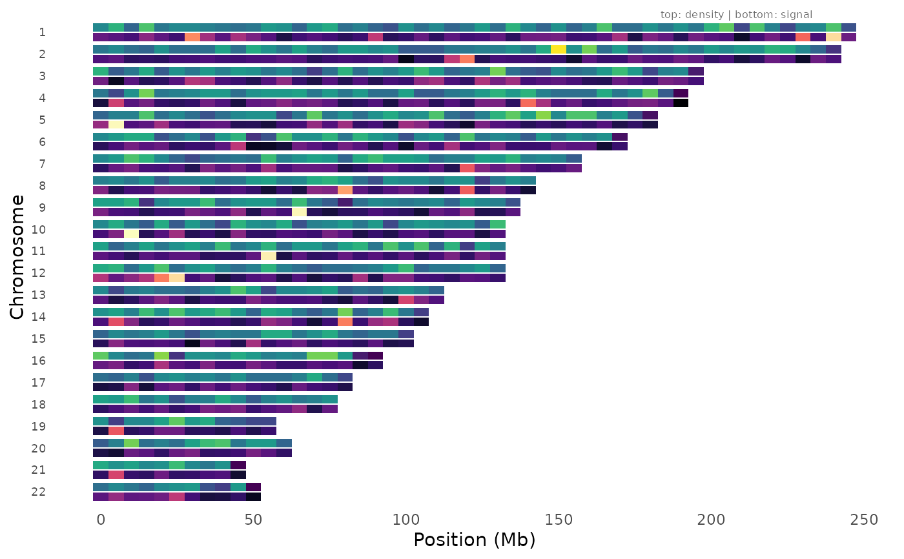
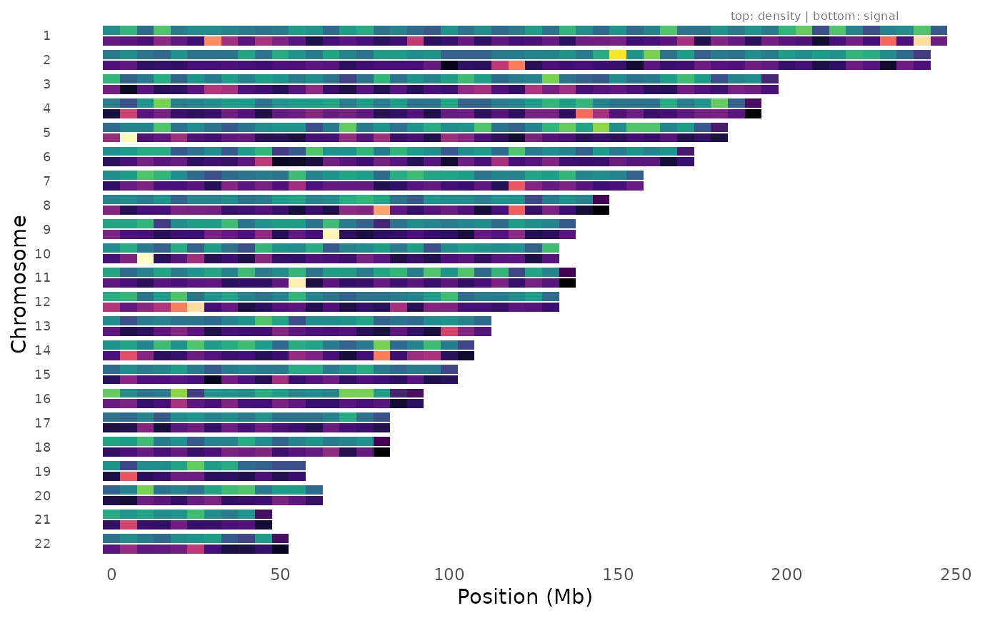
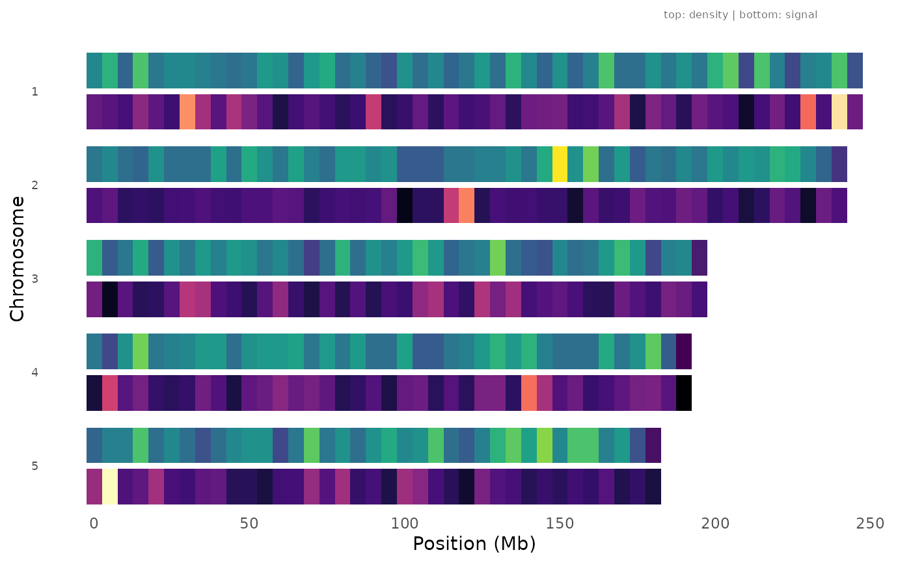
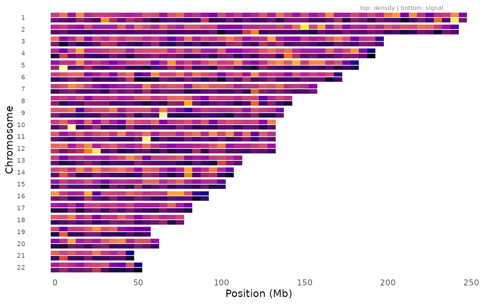

Compare SNP genotyping density against association signal strength across the genome. Each chromosome has two rows: the top track shows the number of variants per bin (density), and the bottom track shows the minimum p-value per bin (signal). This helps distinguish genuine association signals from artifacts driven by uneven genotyping or imputation coverage.
Usage
density_signal_plot(
data,
chr = NULL,
bp = NULL,
p = NULL,
bin_size = 1e+06,
chr_info = NULL,
density_palette = "viridis",
signal_palette = "magma",
chromosomes = NULL,
title = NULL
)Arguments
- data
A
gwas_dataobject or data.frame with GWAS results.- chr, bp, p
Column name overrides.
- bin_size
Bin size in base pairs (default 1 Mb).
- chr_info
Optional data.frame with
chrandlengthcolumns. If NULL, chromosome lengths are inferred from the data.- density_palette
Color palette for the density track.
- signal_palette
Color palette for the signal track.
- chromosomes
Optional integer vector of chromosomes to display.
- title
Plot title.
Examples
data(example_gwas, package = "ggwas")
density_signal_plot(example_gwas, bin_size = 5e6)

# With chromosome info for accurate lengths
density_signal_plot(example_gwas, bin_size = 5e6,
chr_info = chr_info_human())

# Subset to specific chromosomes
density_signal_plot(example_gwas, bin_size = 5e6, chromosomes = 1:5)

# Different palettes
density_signal_plot(example_gwas, bin_size = 5e6,
density_palette = "plasma", signal_palette = "inferno")
